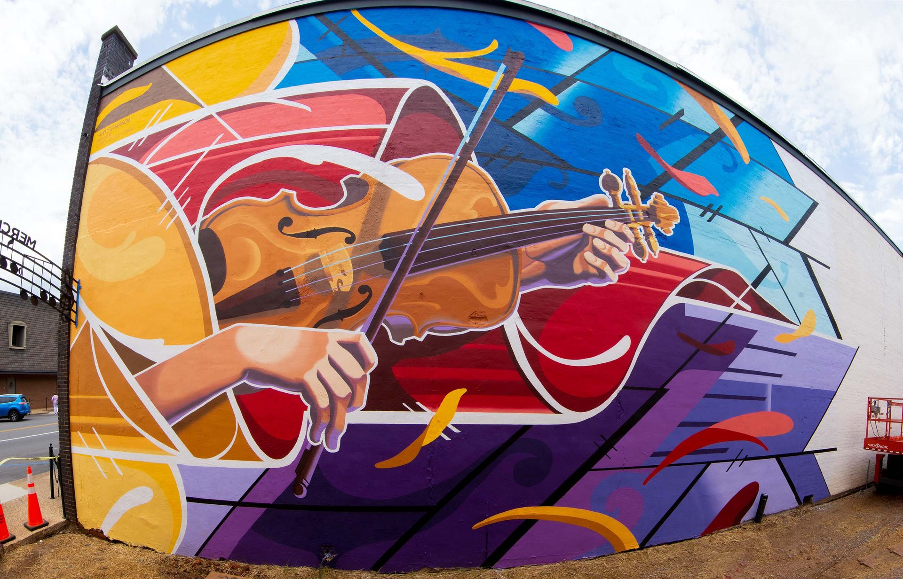
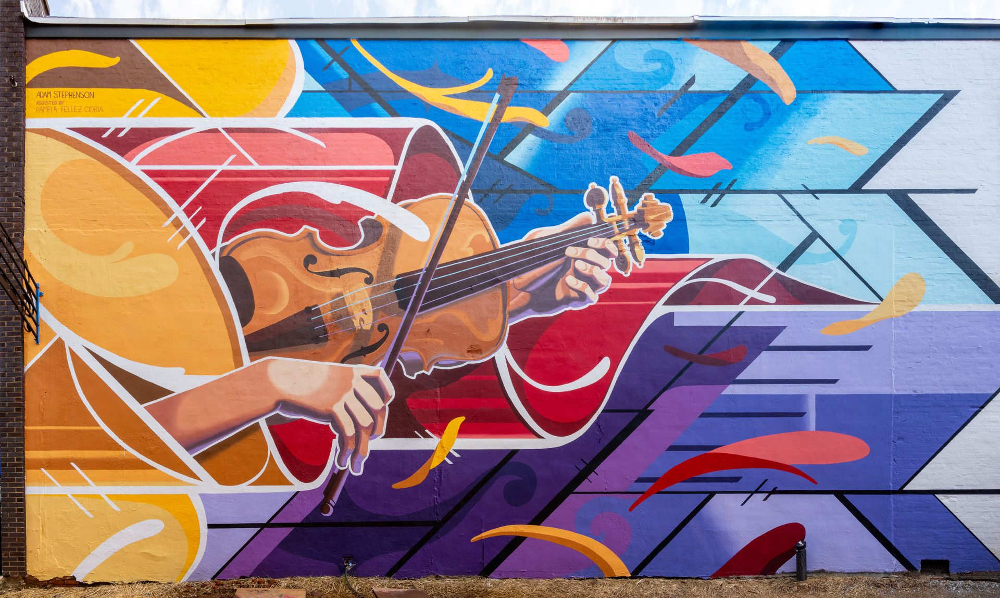

"My grandparents traveled the US performing in a country band. My grandfather even had the fortune to host the Grand Ole Opry on a few occasions with Dolly Parton."
Athens State University
This work was commissioned by Athens Main Street to honor the Tennessee Valley Old Times Fiddlers Convention — one of the oldest and most beloved folk music gatherings in the American South. The design captures the bow's motion and implies the instrument's song through shape and flow, intended as a complementary contrast to the immediate environment. The directional energy of the piece pulls drivers and pedestrians into the alley, toward the other planned works for Merchant's Alley.
But this wall was more personal than the brief alone. I was raised by a musical family. My parents fell in love singing together in a rock band. My grandparents traveled the country performing, and my grandfather had the fortune to host the Grand Ole Opry on a few occasions alongside Dolly Parton. I am a musician myself — I learned to play multiple instruments under the guidance of my mother and father.
My father passed away in November 2020. This mural, painted in the months that followed, was a chance to honor the musical heritage he passed down — to render in 48 feet of paint the thing he gave me that no wall can hold.

